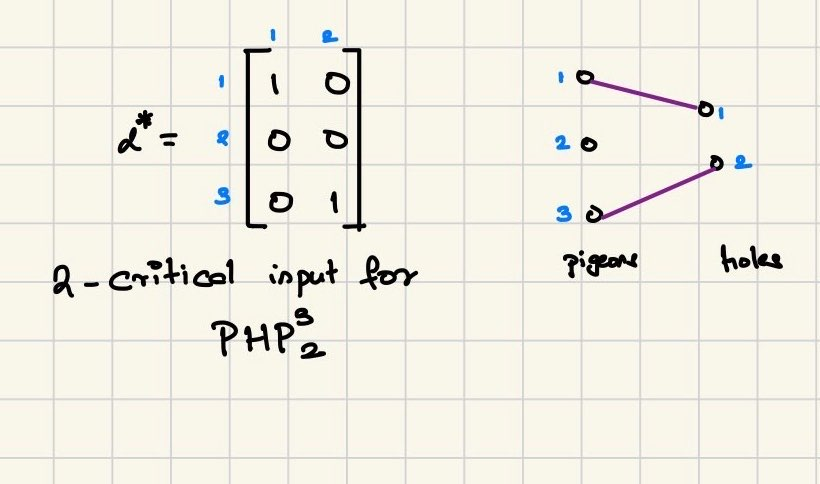
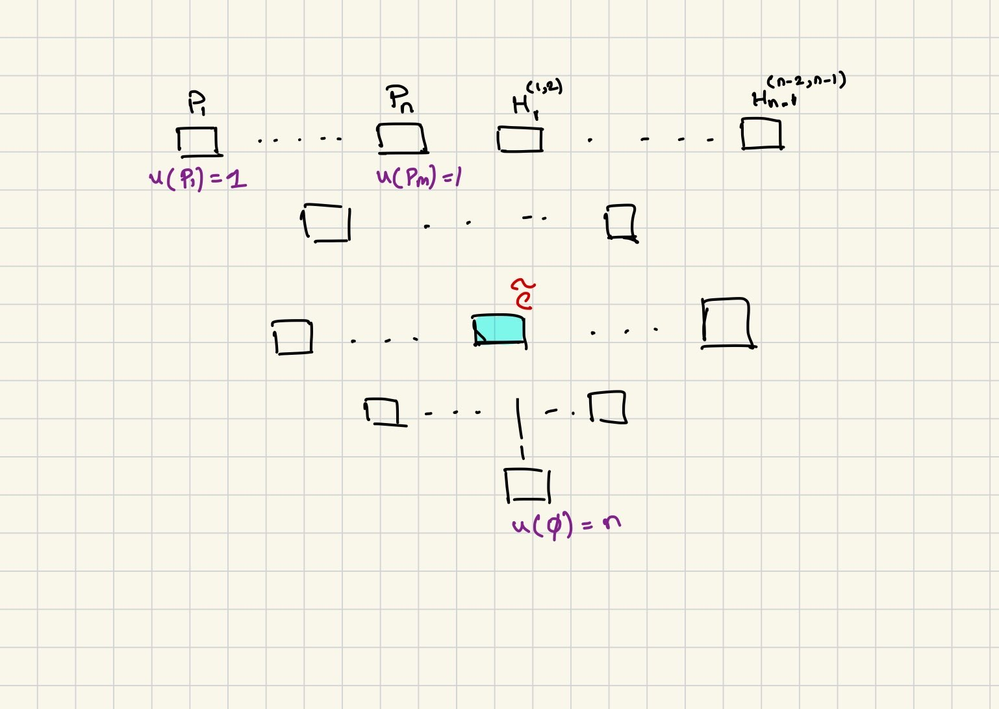

Lower Bound
PHP Refutations In Resolution
This post is about Refuting The Basic Pigeon Hole Principle In The Resolution Proof System. Here the number of pigeons will be $n$ and the number of holes will be $n-1$, and we only consider fomulae that fail to satisfy the Pigeon and Hole Axioms (so we are not considering the functional and onto axioms). See the crash course for a refresher on the resolution proof system, and the axioms of the PHP principle.
The main result we wish to prove is that all refutations have large size. The original result is by Haken (1985) but we go over the proof by Beame & Pitassi (1996) which is a simplification of the original proof.
Any refutation $\pi$ for $\PHP{n}{n-1}$ in the resolution proof system has size $\BigOmega{\exp{n}}$.
Preliminary Material
Sometimes it is easier to deal with formulae with no negated variables. For PHP refutations, as is standard in the literature (see [Razborov, 2003], [Beame & Pitassi, 1996]) we will often do the following conversion to obtain clause $C^+$ from a clause $C$.
Let $\pi$ denote a refutation for $\PHP{m}{n}$. For any clause $C \in \pi$, we denote with $C^+$ the clause obtained by replacing every negated variable $\Complement{x_{ij}} \in C$ with the subclause $X_{ij} = \underset{i'\neq i}{\lor} x_{i'j}$
Finally we will call an assignment $\criticalAlpha{}$ which maps pigeons to holes, critical, if it matches every hole with a unique pigeon, and every pigeon but one to a unique hole.
An assignment $\criticalAlpha{i} \in \bit^{n\times(n-1)}$ is $i$-critical if every pigeon except $i$ gets assigned a unique pigeonhole and every hole gets assigned a unique pigeon $k \neq i$.

One reason we work with critical assignments is that they have the same behaviour on both the converted clause and the original clause.
Let $\pi$ be a $\PHP{n}{n-1}$ refutation in the resolution proof system. For any clause $C \in \pi$, let $C^+$ denote its positive version. Then for any critical assignment $\criticalAlpha{} \in \bit^{n\times (n-1)}$, we have $C(\criticalAlpha{}) = C^+(\criticalAlpha{})$.
The first thing to note is that any critical assignment satisfies all hole axioms. Say $\criticalAlpha{}$ sets $x_{ij} = 1$ for arbitrary literal in clause $C$. Then hole $j$ is already matched to pigeon $i$. Therefore, hole $j$ cannot be filled by any other pigeon other than $i$ (by hole axioms being satisfied). Therefore, $X_{ij} = \underset{i'\neq i}{\lor} x_{i'j} = 0 = \Complement{x_{ij}}$.
Now, say $\criticalAlpha{}$ sets $x_{ij} = 0$ for arbitrary literal in clause $C$. $i$ is not matched to hole $j$, but since $\criticalAlpha{}$ is $k$-critical for some $k$, all the holes are matched to unique pigeons. Therefore hole $j$ gets a pigeon $i'$ that is not $i$ nor $k$. Therefore $X_{ij} = 1$ as $x_{i'j} = 1$.
Small Sized Proofs Must Have Small Width
Before going into the details of the proof, we describe the general proof strategy:
-
Show that for all valid refutations, a small proof size implies that every clause in the proof has small width -- this is described the Restriction Step below
-
However, show that a valid PHP refutation MUST have large width.
-
Thus, we can conclude that the size of the proof must be large.
This theme will continue when showing stronger lower bounds for the more constrained PHPs. Instead of width, we will use pseudowidth, which can be seen as the number of interesting literals in a clause. See the pseudowidth post for details.
Finally, the width of a clause, denoted with $w(C)$ is the number of literals in the clause.
Every refutation $\pi$ of $\PHP{n}{n-1}$ must contain a clause $\CStar \in \pi$ with $w(\CStar^{+}) \geq \frac{n^2}{9}$
For any clause $C$ let $$P(C) = \{ i \in [n]: \exists \criticalAlpha{i} \in \bit^{n\times (n-1)} \text{ s.t } C(\criticalAlpha{i}) = 0\}$$
In simple words, let $A = \{\criticalAlpha{1}, \dots, \criticalAlpha{k}\}$ be all the critical assignments, and $A' \subseteq A$ the critical assignments such that $C(\criticalAlpha{j}) = 0$ for all $\criticalAlpha{j} \in A'$. Then $P(C)$ is the set of pigeons associated with $A'$.
Let $\mu(C) = \Size{P(C)}$. Then for each pigeon axiom $P_i$, by definition $\mu(P_i) = 1$.1
Any critical assignment that does not include $i$ will satisfy $P_i$. Thus, the only critical assignments for which $P_i$ is not satisfied are the ones that screw over pigeon $i$.
On the other hand, $\mu(\emptyset) = [n]$ (as all assignments, and therefore all critical assignments falsify $\emptyset$ by definition).

Thus from going from $P_i$'s to $\emptyset$, there must be some clause in the proof, lets call it $\CStar$, where for $\epsilon=1/3$2
For any application of resolution where we get $C$ from $A$ and $B$, if a critical assignment $\beta \in \bit^{n \times (n-1)}$ is such that $C(\beta) = 0$, then it must be that one of $A(\beta) = 0$ or $B(\beta) = 0$ (that is the definition of a resolvent). Therefore, we get $\mu(C) \le \mu(A) + \mu(B)$. Now to get to $\mu(\emptyset) = n$ from $\mu(P_i)$, we have some clause $\CStar$ that is a resolvent of clauses $A$ and $B$ with $\mu(A), \mu(B) \ge \epsilon n$. Note: Here setting $\epsilon=1/3$ is arbitrary, we could have used any arbitrary constant.
$$\epsilon n \le \mu(\CStar) \le 2\epsilon n$$
Pick arbitrary $i \in P(\CStar)$ and arbitrary $j \notin P(\CStar)$. Let $\criticalAlpha{i}$ denote the critical assignment which causes $i$ to be in $P(\CStar)$. We construct $\criticalAlpha{j}$ by swapping row $i$ and $j$ in $\criticalAlpha{i} \in \bit^{n \times (n-1)}$.
Now, as $\CStar(\criticalAlpha{i}) = 0$, and $\criticalAlpha{i}$ is critical, by the lemma above we have $\CStar^{+}(\criticalAlpha{i}) = 0$.
We also have $\CStar(\criticalAlpha{j}) = 1$.3
Assume not, then this implies $j \in P(\CStar)$ as $\criticalAlpha{j}$ is critical, which contradicts our assumption.
Now $\CStar^{+}(\criticalAlpha{i}) = 0$ and $\CStar^{+}(\criticalAlpha{j}) = 1$, and as we swapped exactly ONE row to construct $\criticalAlpha{j}$, there is exactly ONE literal, lets call it $x_{ik} \in C^+$, for some $k \in [n-1]$, that is set to true by $\criticalAlpha{j}$, and was false in $\criticalAlpha{i}$. Now $i$ and $j$ were arbitrary. So for each such pair, I will have a unique $x_{ik}$. If we have $s = \mu{\CStar} = \Size{P(\CStar)}$, and $n-s$ such $j \notin P(\CStar)$, then the total number of literals in clause $\CStar$ is $s(n-s)$. Now we have $s \ge \epsilon n$ and $n-s \ge (n-2\epsilon n) = n(1-2\epsilon)$.
Small Sized Proofs Imply Small Width Proofs
Wide Clause: Given $\epsilon \in (0,1)$ and a refutation $\pi$ for $\PHP{n}{n-1}$, we say a clause $C \in \pi$ is $\epsilon$-wide if $w(C^+) \ge \epsilon n^2$
Let $\pi$ be a refutation of $\PHP{n}{n-1}$, and $\pi^{+} = \{C^+\}_{C\in \pi}$ be the refutation obtained by replacing negated literals in every clause in $C \in \pi$. Let $S_0$ be the number of $\epsilon$ wide clauses in $\pi^+$ (from the above lemma we know that $S_0 \ge 1$ for $\epsilon \le 1/9$). Note $S \le \Size{\pi}$. Each of these clauses have at least $\epsilon$ fraction of the $n^2$ possible literals. Therefore by the averaging argument, there must be one literal, lets call it $x_{ij}$, that is present in at least $\epsilon S_0$ of all these wide clauses. We set $x_{ij} = 1$ and $x_{i'j} = 0$ for all $i' \neq i$, and set $x_{ij'} = 0$ for all $j' \neq j$. Setting $x_{ij} = 1$ implies we satisfy at least $\epsilon S_0$ wide clauses. Thus, the number of wide clauses left is at most $S_0(1 - \epsilon)$. Furthermore, once we apply this restriction to $\pi$ (and therefore $\pi^+$) we are left with a restriction of $\pi$, lets call it $\pi_1$, which is a resolution refutation of $\PHP{n-1}{n-2}$.
Now we repeat the same process $k=\lceil\frac{\log S_0}{\epsilon}\rceil$ times such that we end up with restricted proof $\pi_k$ which is a refutation of $\PHP{n-k}{n-k -1}$. After $k$ restrictions, there should be no wide clauses left in $\pi$. To see why
Where the last inequality comes from plugging in the value of $k$, and the second last inequality comes from Taylors theorem. However, from the lemma above we have that $\exists \CStar \in \pi_k$ such that $w(\CStar^+) \ge (n-k)^2/9$, if $\pi_k$ is a valid refutation of $\PHP{n-k}{n-k-1}$ (which we assumed to be the case as $\pi$ was a valid refutation, and $\pi_k$ is just a restriction of $\pi$).
Combining the two we get, that
$$ \frac{(n-k)^2}{9} = \frac{\left(n-\frac{\log S_0}{\epsilon}\right)^2}{9} \le w(\CStar^+) < \epsilon n^2$$
As $\epsilon$ is some small constant, and solving for $S_0$ we get $S_0 \ge \exp(\BigOmega{n})$. And as $S_0 \le \Size{\pi}$, we get a lower bound on the size of any refutation.
References
- Haken, A.. The Intractability of Resolution. Theoretical Computer Science, 1985.
- Beame, P. and Pitassi, T.. Simplified and Improved Resolution Lower Bounds. FOCS, 1996.
- Razborov, A.. Resolution Lower Bounds for the Weak Pigeonhole Principle. ECCC, 2003.